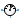

Interfaces for AC single-phase models
This package contains connector specifications and partial models for more complex components.
Extends from Modelica.Icons.InterfacesPackage (Icon for packages containing interfaces).
| Name | Description |
|---|---|
| Quasi-static single-phase pin | |
| PositivePin | Positive quasi-static single-phase pin |
| Negative quasi-static single-phase pin | |
| Elementary two pins with reference connection, without declaration of voltage and current | |
| Two pins | |
| Two pins, current through | |
| AbsoluteSensor | Partial potential sensor |
|  RelativeSensorElementary | Elementary partial voltage / current sensor |
| Partial voltage / current source |
Quasi-static single-phase pin
The potential of this connector is the complex voltage and the flow variable is the complex current. The positive and negative pin are derived from this base connector.
PositivePin, NegativePin, Plug, PositivePlug, NegativePlug
| Name | Description |
|---|---|
| v | Complex potential at the quasi-static single-phase pin |
| i | Complex current flowing into the quasi-static single-phase pin |
Positive quasi-static single-phase pin
The positive pin is based on Pin. Additionally the reference angle is specified in the connector. The time derivative of the reference angle is the actual angular velocity of the quasi-static voltage and current. The symbol is also designed such way to look different than the negative pin.
Pin, NegativePin, Plug, PositivePlug, NegativePlug
Extends from Pin (Quasi-static single-phase pin).
| Name | Description |
|---|---|
| v | Complex potential at the quasi-static single-phase pin |
| i | Complex current flowing into the quasi-static single-phase pin |
| reference | Reference |
 Modelica.Electrical.QuasiStatic.SinglePhase.Interfaces.NegativePin
Modelica.Electrical.QuasiStatic.SinglePhase.Interfaces.NegativePinNegative quasi-static single-phase pin
The negative pin is based on Pin. Additionally the reference angle is specified in the connector. The time derivative of the reference angle is the actual angular velocity of the quasi-static voltage and current. The symbol is also designed such way to look different than the positive pin.
Pin, PositivePin, Plug, PositivePlug, NegativePlug
Extends from Pin (Quasi-static single-phase pin).
| Name | Description |
|---|---|
| v | Complex potential at the quasi-static single-phase pin |
| i | Complex current flowing into the quasi-static single-phase pin |
| reference | Reference |
Elementary two pins with reference connection, without declaration of voltage and current
This partial model uses a positive and negative pin, but no complex voltage, current, power, etc. Additionally, the angular velocity of the quasi-static system is explicitly defined as variable. This model is mainly intended to be used with graphical representation of user models.
PositivePin, NegativePin, TwoPin, OnePort
| Name | Description |
|---|---|
| pin_p | Positive quasi-static single-phase pin |
| pin_n | Negative quasi-static single-phase pin |
Two pins
This partial model uses a positive and negative pin and defines the complex voltage difference as well as the complex current (into the positive pin). Additionally, the angular velocity of the quasi-static system is explicitly defined as variable. This model is mainly intended to be used with graphical representation of user models.
PositivePin, NegativePin, TwoPinElementary, OnePort
Extends from Modelica.Electrical.QuasiStatic.SinglePhase.Interfaces.TwoPinElementary (Elementary two pins with reference connection, without declaration of voltage and current).
| Name | Description |
|---|---|
| pin_p | Positive quasi-static single-phase pin |
| pin_n | Negative quasi-static single-phase pin |
Two pins, current through
This partial model is based on TwoPin and additionally considers the complex current balance of the positive and the negative pin. This model is intended to be used with textual representation of user models.
PositivePin, NegativePin, TwoPinElementary, TwoPin
Extends from TwoPin (Two pins).
| Name | Description |
|---|---|
| pin_p | Positive quasi-static single-phase pin |
| pin_n | Negative quasi-static single-phase pin |
Partial potential sensor
The absolute sensor partial model provides a single positive pin to measure the complex voltage, frequency, angular frequency. Additionally this model contains a proper icon and a definition of the angular velocity.
RelativeSensorElementary, PotentialSensor, Polyphase.Interfaces.AbsoluteSensor, Polyphase.Interfaces.RelativeSensorElementary
Extends from Modelica.Icons.RoundSensor (Icon representing a round measurement device).
| Name | Description |
|---|---|
| pin | Positive quasi-static single-phase pin |
 Modelica.Electrical.QuasiStatic.SinglePhase.Interfaces.RelativeSensorElementary
Modelica.Electrical.QuasiStatic.SinglePhase.Interfaces.RelativeSensorElementaryElementary partial voltage / current sensor
The relative sensor partial model relies on the TwoPinElementary to measure the complex voltage or current. Additionally this model contains a proper icon and a definition of the angular velocity.
AbsoluteSensor, VoltageSensor, CurrentSensor, PowerSensor, Polyphase.Interfaces.AbsoluteSensor, Polyphase.Interfaces.RelativeSensorElementary
Extends from Modelica.Icons.RoundSensor (Icon representing a round measurement device), TwoPinElementary (Elementary two pins with reference connection, without declaration of voltage and current).
| Name | Description |
|---|---|
| pin_p | Positive quasi-static single-phase pin |
| pin_n | Negative quasi-static single-phase pin |
Partial voltage / current source
The source partial model relies on the OnePort and contains a proper icon.
VoltageSource, VariableVoltageSource, CurrentSource, VariableCurrentSource, Polyphase.Interfaces.Source.
Extends from OnePort (Two pins, current through).
| Name | Description |
|---|---|
| pin_p | Positive quasi-static single-phase pin |
| pin_n | Negative quasi-static single-phase pin |